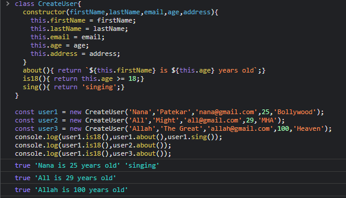

Class
they are fake class as internally they doing the same work of prototype and __proto__
cannot be invoked without the new keyword

Super()
Static methods and propertise;
This we can call directly using class name.